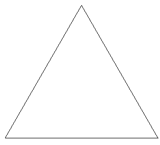
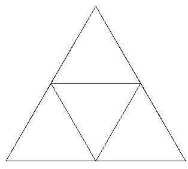
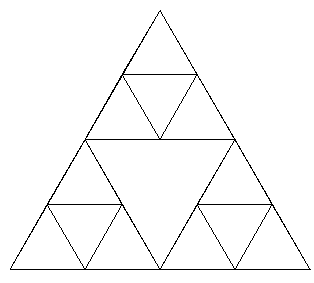
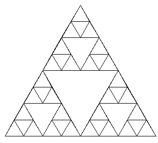
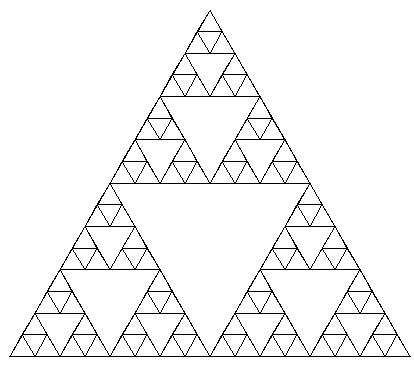
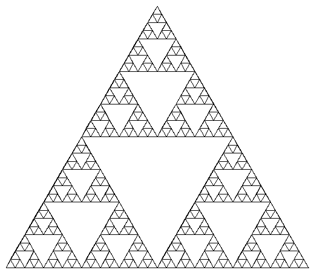
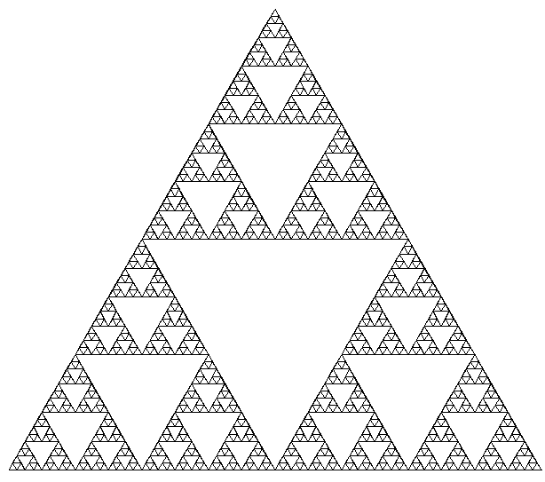
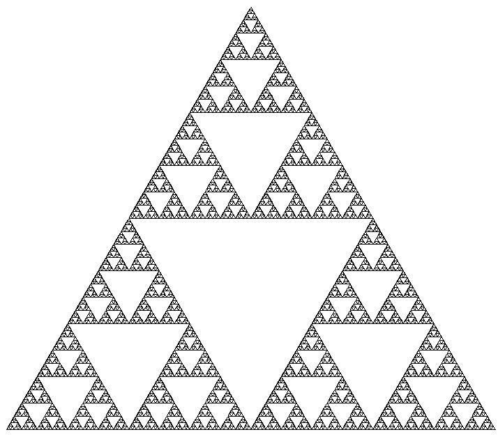

A rather crude and unoptimized program for generation of the Sierpinski triangle with a given edge size of the largest triangle and number of iterations.
First some example images:








It works by making a new triangle from the midpoints of the current triangle and recursing on the three newly formed subtriangles.
/* Sierpinski curve */
#include <stdio.h>
#include <stdlib.h>
#include <string.h>
#include <math.h>
typedef struct { double x,y; }Pt;
void line(int*,int,int,int,int,int,int);
void init_sier(int a,int p,int **buf,int *ww,int *hh,Pt *v) {
int w=a+p+4,h=a*sqrt(3)*0.5+2*p+4,s=(int)(w*h);
*ww=(int)w; *hh=(int)h;
*buf=malloc(sizeof(int)*s);
memset(*buf,0,sizeof(int)*s);
v[0]=(Pt){p , p+((double)a)*sqrt(3)*0.5};
v[1]=(Pt){p+a , p+a*sqrt(3)*0.5};
v[2]=(Pt){p+a/2 , p};
}
void line(int *buf,int w,int h,int x1,int y1,int x2,int y2) {
double dx=x2-x1,dy=y2-y1,x=x1,y=y1,m;
if(x1==x2 && y1==y2) { buf[y1*w+x1]=1; return; }
if(fabs(dy)<fabs(dx)) {
if(y1==y2) {
if(x1>x2) { x=x2; x2=x1; }
for(;x<=x2;x++) buf[(int)y*w+(int)x]=1;
return;
}
if(dx>0) {
for(m=dy/dx,x=x1,y=y1;(y1<y2 ? y<=y2:y>=y2) || x<=x2 ;x++,y=y1+m*(x-x1)) buf[(int)y*w+(int)x]=1;
} else {
for(m=dy/dx,x=x2,y=y2;(y1<y2 ? y>=y1:y<=y1) || x<=x1 ;x++,y=y1+m*(x-x1)) buf[(int)y*w+(int)x]=1;
}
} else {
if(x1==x2) {
if(y1>y2) { y=y2; y2=y1; }
for(;y<=y2;y++) buf[(int)y*w+(int)x]=1;
}
if(dy>0) {
for(m=dx/dy,x=x1,y=y1;(x1<x2 ? x<=x2:x>=x2) || y<=y2 ;y++,x=x1+m*(y-y1)) buf[(int)y*w+(int)x]=1;
} else {
for(m=dx/dy,x=x2,y=y2;(x1<x2 ? x>=x1:x<=x1) || y<=y1 ;y++,x=x1+m*(y-y1)) buf[(int)y*w+(int)x]=1;
}
}
}
/* recursively draw the curve */
void sier(int *buf,int w,int h,Pt *v,int d) {
Pt vv[3],vv1[3],vv2[3],vv3[3];
if(d==0) return;
/* draw the edges */
line(buf,w,h,v[0].x,v[0].y,v[1].x,v[1].y);
line(buf,w,h,v[1].x,v[1].y,v[2].x,v[2].y);
line(buf,w,h,v[2].x,v[2].y,v[0].x,v[0].y);
/* make a new triangle from midpoints of edges */
if(d>0) {
vv[0]=(Pt){(v[0].x+v[1].x)/2,(v[0].y+v[1].y)/2};
vv[1]=(Pt){(v[1].x+v[2].x)/2,(v[1].y+v[2].y)/2};
vv[2]=(Pt){(v[2].x+v[0].x)/2,(v[2].y+v[0].y)/2};
vv1[0]=v[0]; vv1[1]=vv[0]; vv1[2]=vv[2];
vv2[0]=vv[0]; vv2[1]=v[1]; vv2[2]=vv[1];
vv3[0]=vv[1]; vv3[1]=v[2]; vv3[2]=vv[2];
sier(buf,w,h,vv1,d-1);
sier(buf,w,h,vv2,d-1);
sier(buf,w,h,vv3,d-1);
}
}
int main(int argc,char *argv[]) {
int a,p=10,w,h,*buf,d,i;
Pt v[3];
if(argc!=3) {
fprintf(stderr,"%s edge iterations\n",argv[0]);
return 1;
}
if((a=atoi(argv[1]))<=0) {
fprintf(stderr,"%s edge iterations\n",argv[0]);
return 2;
}
if((d=atoi(argv[2]))<=0) {
fprintf(stderr,"%s edge iterations\n",argv[0]);
return 3;
}
/* fprintf(stderr,"a=%d,d=%d\n",a,d); */
init_sier(a,p,&buf,&w,&h,v);
sier(buf,w,h,v,d);
printf("P1 %d %d\n",w,h);
for(i=0;i<w*h;i++) printf("%d ",buf[i]);
printf("\n");
free(buf);
return 0;
}